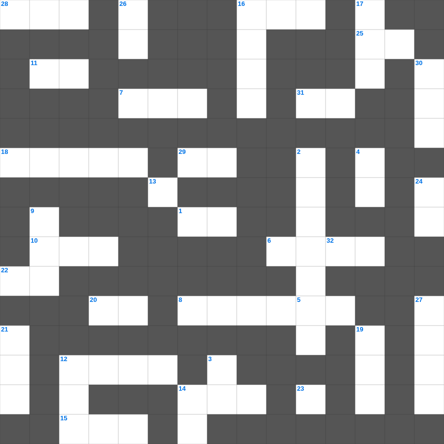

욥기 마스터 100 (2/2)
📌 서비스 정의
십자가로세로는 교회 주보와 주일학교에서 사용할 수 있는 성경 기반 가로세로 퍼즐 서비스입니다. 성경 인물, 사건, 핵심 구절을 바탕으로 제작되었습니다. 온라인 풀이 및 인쇄 기능을 제공합니다.
📖 욥기란?
욥기는 의롭고 경건한 사람 욥이 갑작스러운 고난을 당하면서 겪는 고통과 친구들과의 논쟁, 그리고 하나님과의 만남을 통해 신앙의 본질을 다루는 시가서입니다.
📚 욥기의 주요 사건·주제
욥의 재산과 자녀를 잃음 · 세 친구와의 논쟁 · 엘리후의 발언 · 하나님의 폭풍 속 응답 · 욥의 회복
욥기를 주제로 한 욥기 성경 퀴즈 문제입니다. 35개의 단어를 맞춰보세요! 가로세로 낱말 퍼즐 형식으로 욥기의 핵심 내용을 재미있게 복습할 수 있습니다.

📝 가로 힌트
1. 사도의 표가 된 것은 내가 너희 가운데서 모든 참음과 표적과 기사와 이것을 행한 것이라
5. 너는 이웃과 더불어 다투거든 이것만 분별하고 남의 은밀한 일은 누설하지 말라
6. 우박 재앙 때 상하지 않은 두 작물
7. 나일강이 피로 변한 첫 번째 재앙
8. 웃사가 법궤를 만지다 죽은 사건
10. 성막 안 가장 거룩한 장소
11. 에덴의 동쪽으로 쫓겨난 인류
12. 이삭을 번제로 드리려 했던 산
13. 죽을 자가 죽는 것도 내가 기뻐하지 아니하노니 너희는 스스로 돌이키고 이것지니라
14. 모세의 아내
15. 모르드개가 바사 제국에서 오른 지위
16. 에스겔이 사로잡혀 간 나라
18. 나아만 장군이 요단강에 일곱 번 씻음
20. 그러나 여호와여, 이제 주는 우리 아버지시니이다 우리는 이것이요 주는 토기장이시니
22. 아브라함의 아버지
25. 유다 백성이 포로로 잡혀가 황폐해진 땅이 70년 동안 누린 것
28. 이스라엘 백성이 요단강을 건너 처음 도착한 성
29. 하만이 유다인을 죽일 날짜를 정하기 위해 던진 것
31. 노하기를 속히 하는 자는 미련한 일을 행하고 이것한 계교를 꾀하는 자는 미움을 받느니라
📝 세로 힌트
2. 나답과 아비후의 시체를 치운 친척
3. 느헤미야가 백성들을 계수할 때 사용한 문서
4. 나오미가 자신을 부르라고 한 이름 (괴로움이라는 뜻)
9. 배부른 자는 꿀이라도 싫어하고 주린 자에게는 쓴 것이라도 이것이니라
12. 가난한 자를 위해 밭 이것을 다 거두지 말라
14. 에스라서의 마지막 장수
16. 강가에서 모세를 건져낸 사람
17. 너희는 기쁨으로 나아가며 이것이 인도함을 받을 것이요
19. 내 형제들아 너희가 여러 가지 시험을 당하거든 온전히 이것게 여기라
21. 예수님이 자라나신 동네
23. 공중의 이것이 그 소리를 전하고 날짐승이 그 일을 전파할 것임이니라
24. 아브라함이 이삭 대신 드린 제물
26. 광야에서 하늘에서 내려온 양식
27. 지혜로운 여인, 나발의 아내였다가 다윗의 아내가 됨
30. 다윗의 아들, 지혜의 왕
32. 욥이 고난받을 때 사탄이 처음으로 친 가축 중 '나귀'와 함께 있던 짐승
🧩 이 퍼즐에서 배우는 내용
이 퍼즐은 욥기 마스터 100 (2/2)의 핵심 단어와 개념을 자연스럽게 복습할 수 있도록 구성되었습니다. 주일학교 수업이나 개인 성경공부에서 학습 내용을 점검하는 용도로 바로 활용할 수 있습니다.
🧑🏫 교회 교육 자료 활용
이 퍼즐은 주일학교 교재 추천 자료로 활용할 수 있고, 주일학교 주보에 넣기 좋은 분량으로 구성되어 있습니다. 수업용 주일학교 교안에 활동지로 붙이거나, 예배 후 복습용 주일학교 공과교재로 바로 사용할 수 있습니다.
🏷️ 키워드
욥기 성경 퀴즈 문제, 욥기, 십자가로세로, 성경퀴즈, 말씀퀴즈, 가로세로퍼즐, 주일학교 교재 추천, 주일학교 주보, 주일학교 교안, 주일학교 공과교재